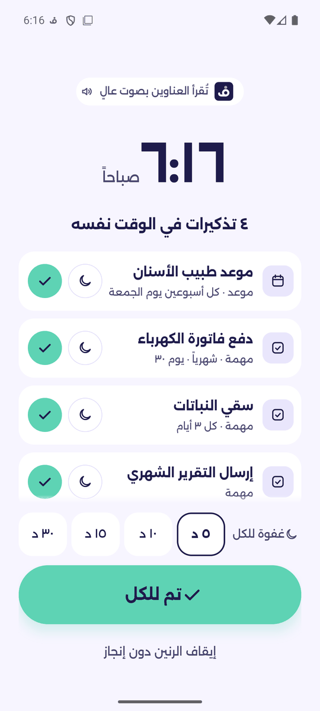
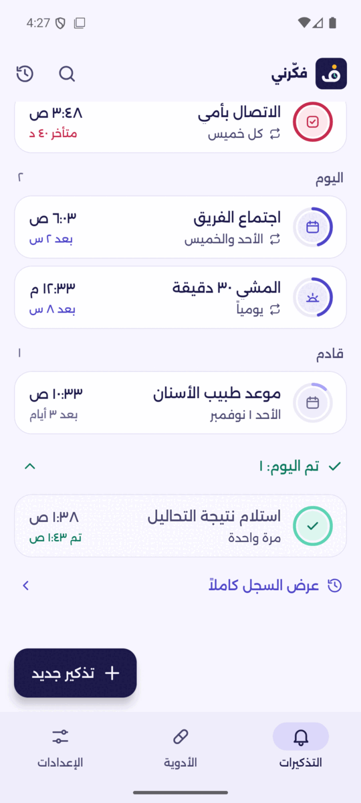
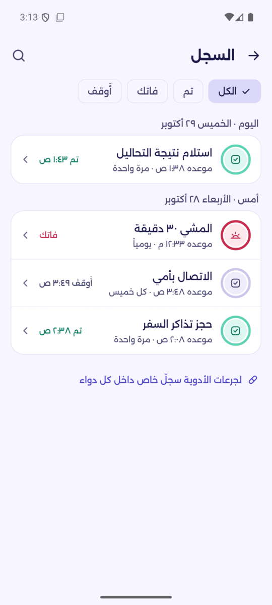
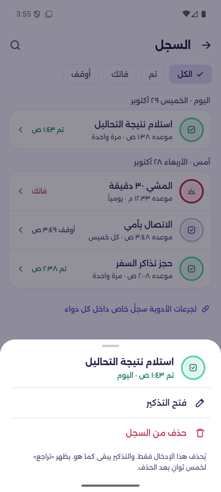
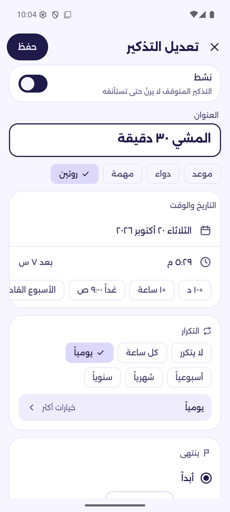
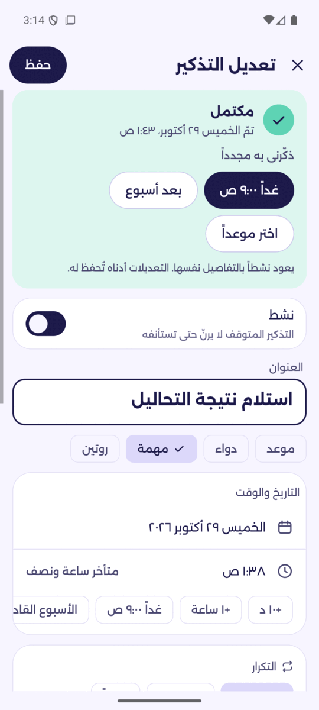
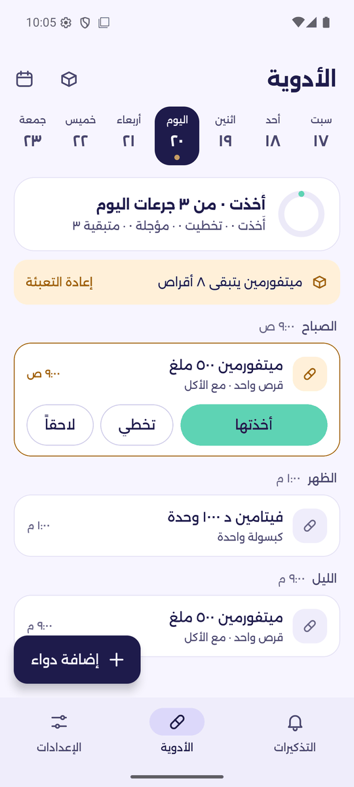
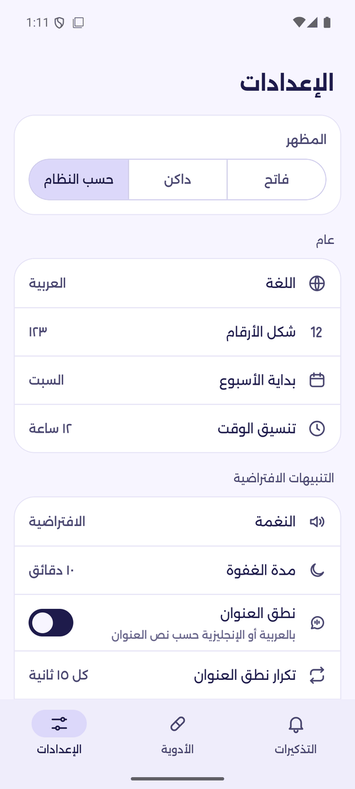
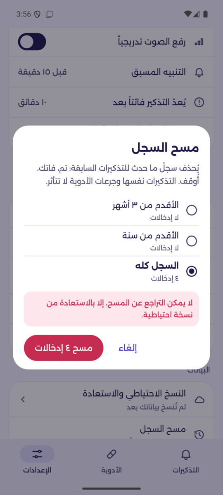
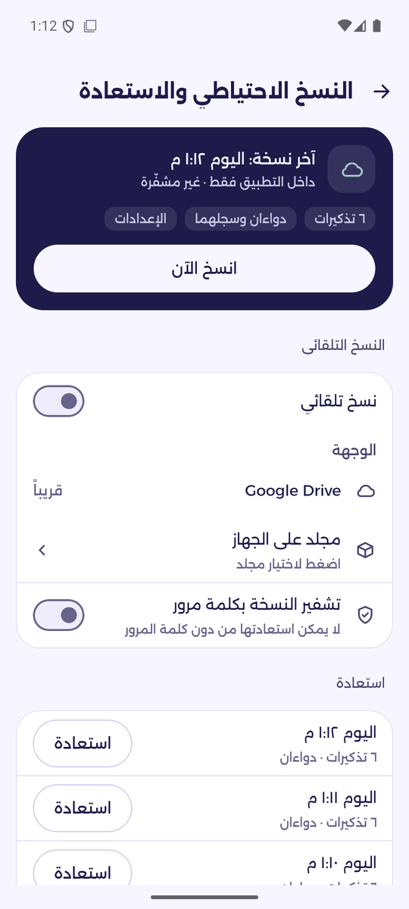

كل ما يهمّك، في موعده
يرنّ فكّرني بتذكيراتك وجرعات أدويتك في موعدها، حتى دون إنترنت وبعد إعادة تشغيل الهاتف مباشرة. صُمّم بالعربية أولاً مع دعم كامل للإنجليزية.
- بلا حساب
- بلا إعلانات
- بلا تتبّع
- يعمل دون إنترنت
- عربي وإنجليزي
صُمّم ليرنّ، في كل مرة
تذكيرات وأدوية على منبّهات تستمر بالعمل والتطبيق مغلق أو الهاتف في السكون أو بعد إعادة التشغيل.
منبّهات ترنّ فعلاً
منبّه بملء الشاشة فوق شاشة القفل، وفوق التطبيقات الأخرى أثناء استخدامك للهاتف، مع غفوة وتنبيه مسبق وتكرار من كل بضع ساعات إلى كل سنة.
اسمع العنوان
يُنطق التذكير بصوت عالٍ بلغته، عربية أو إنجليزية، مرة واحدة أو كل بضع ثوانٍ.
الأدوية ببساطة
لكل جرعة منبّهها الخاص: أخذتها أو لاحقاً أو تخطّيت. متابعة المخزون وتنبيهات إعادة التعبئة وسجل شهري.
نسخ في Drive الخاص بك
انسخ إلى مجلد «Fakkerni backups» في Google Drive الخاص بك أو إلى مجلد على هاتفك، مع تشفير اختياري بكلمة مرور.
موثوق بعد إعادة التشغيل
ترنّ المنبّهات حتى بعد إعادة تشغيل الهاتف وقبل فتح القفل، وينبّهك فكّرني إن أخّرته أنظمة توفير البطارية.
العربية أولاً
واجهة من اليمين لليسار، وأرقام وجمع عربي صحيح، وأسبوع يبدأ بالسبت، ومظهر فاتح وداكن.
نظرة أقرب
عشر شاشات رئيسية، بالمظهر الفاتح والداكن.










ثبّته في دقيقة
فكّرني غير متاح على Google Play بعد. نزّل ملف APK وثبّته مباشرة.
فكّرني لأندرويد
أحدث إصدار، جاهز للتثبيت.
نزّل لأندرويد- الإصدار
- الأحدث
- الحجم
- ~60 MB
- يتطلّب
- أندرويد ٨+
الجديد في الإصدار
SHA-256:
نزّل ملف APK
اضغط «تنزيل» على هاتفك الأندرويد. اسم الملف fakkerni.apk.
اسمح بالتثبيت
افتح الملف. إذا طلب أندرويد ذلك، اسمح بتثبيت التطبيقات من المتصفح أو مدير الملفات.
افتح فكّرني
اتبع الإعداد القصير: اللغة والإشعارات وأذونات المنبّه. فعّل «عرض المنبّه فوق التطبيقات» ليظهر المنبّه بملء الشاشة حتى أثناء استخدامك للهاتف. لديك نسخة احتياطية؟ اختر «لديّ نسخة احتياطية، استعادة».
قد يحذّرك Google Play Protect من أن التطبيق من مطوّر غير معروف، لأن فكّرني غير متاح على Google Play بعد. اضغط «مزيد من التفاصيل» ثم «التثبيت على أي حال».
الخصوصية من الأساس
تذكيراتك وأدويتك شأن شخصي. يحفظها فكّرني على هاتفك، ولا تذهب النسخة الاحتياطية إلا إلى المكان الذي تختاره.
اقرأ سياسة الخصوصية- بلا حساب ولا تسجيل
- بلا خوادم ولا تحليلات ولا إعلانات
- تبقى بياناتك على هاتفك
- نسخ اختيارية إلى Google Drive الخاص بك أو مجلد، مشفّرة إن أردت
أسئلة شائعة
هل فكّرني مجاني؟
نعم. بلا إعلانات ولا اشتراكات ولا مشتريات داخل التطبيق.
هل يعمل دون إنترنت؟
نعم. تعمل المنبّهات والتذكيرات والأدوية دون إنترنت بالكامل. يُستخدم الإنترنت فقط عند النسخ إلى Google Drive.
أين تُحفظ نسخي الاحتياطية؟
حيث تختار: مجلد «Fakkerni backups» في Google Drive الخاص بك، أو مجلد على هاتفك، أو داخل التطبيق. ويمكنك تشفيرها بكلمة مرور.
لماذا ليس على Google Play؟
فكّرني ما زال قيد الاختبار وسيصل إلى Google Play لاحقاً؛ وحتى ذلك الحين يمكنك تثبيت ملف APK من هذه الصفحة.
ما الهواتف المدعومة؟
أندرويد ٨ أو أحدث. بعض الشركات تقيّد التطبيقات في الخلفية، ويوضّح إعداد فكّرني كيف تُبقي المنبّهات في موعدها على هاتفك.
لماذا يظهر المنبّه كإشعار فقط؟
أثناء استخدامك للهاتف، يعرض أندرويد المنبّهات كإشعار ما لم يُسمح للتطبيق بالظهور فوق التطبيقات الأخرى. فعّل في فكّرني: الإعدادات › الأذونات › «عرض المنبّه فوق التطبيقات»، ليظهر المنبّه بملء الشاشة.